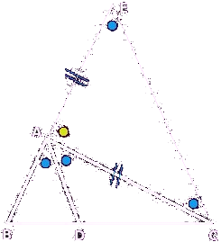

Teorema di Talete
Teorema di Talete: “Un fascio di rette parallele tagliate da due trasversali genera coppie di segmenti direttamente proporzionali”.
o meglio "Dato una fascio di rette parallele tagliate da due trasversali, sulle trasversali si vengono a formare due classi di segmenti ordinatamente e direttamente proporzionali".
Non finisce qui: consideriamo i segmenti somma AC e A'C'. Il teorema di Talete ci dice anche che:
Conseguenze del Teorema di Talete sui triangoli: Corollari del Teorema di Talete
Teorema della retta parallela. Una retta parallela ad un lato di un triangolo taglia gli altri due lati del triangolo in modo proporzionale.
Vale anche il Viceversa:
Teorema inverso della parallela. Se una retta taglia due lati di un triangolo in modo proporzionale, allora è parallela al terzo lato del triangolo
Teorema della bisettrice dell'angolo interno di un triangolo. La bisettrice dell'angolo interno di un triangolo divide il lato opposto in parti proporzionali agli altri due lati
Ipotesi: BAD = DAC.
TesiAB : AC = BD : DC.
Dim..
Si costruisce AE = AC, prolungando il segmento BA oltre A;
Si congiunge E con C → si ottiene il triangolo AEC, isoscele per costruzione ⇒ angoli alla base congruenti;
Si sfrutta il fatto che la somma degli angoli interni di un triangolo è un angolo piatto;
Si osserva che anche l'angolo BAE (cioè BAD + DAC + CAE) è piatto;
Uguagliando le somme e semplificando, si ricava:
∠𝐴𝐸𝐶 + ∠𝐴𝐶𝐸 = ∠𝐵𝐴𝐷 + ∠𝐷𝐴𝐶
Per congruenze (per costruzione e ipotesi), si arriva a ∠𝐷𝐴𝐶 = ∠𝐴𝐶𝐸;
Criterio di parallelismo: Questi due angoli sono alterni interni rispetto alle rette AD e CE tagliate da AC ⇒ AD ∥ CE.
Applicazione del teorema di Talete: Ora che hai due rette parallele (AD ∥ CE), tagliate dalle trasversali BE e DC, si applica il teorema di Talete nella forma:
AB/AE = BD/DC
E poiché AE = AC, otteniamo:
AB/AC = BD/DC
Questa proporzione è proprio l’obiettivo della dimostrazione! In altre parole, l'applicazione di Talete permette di concludere che i segmenti sulle trasversali sono in proporzione, grazie alla costruzione delle rette parallele. □
Similar triangles
There's an important result following Thales theorem regarding similar triangles. Triangles ABC and A'B'C' are calles similar if their corresponding angles are equal, i.e., if
angle at A = angle at A' = (α)
angle at B = angle at B' = (β)
angle at C = angle at C' = (γ)
It turns out that equal angles imply that all sides are proportional, so we may say that one triangles is a magnification of the other, or that they have the same "shape".

Imagine cutting in two the triangle A'B'C' with a segment BC parallel to B'C', obtaining the triangle ABC. From Thales theorem
b/ (b' − b) = c/(c' − c)
Multiplying both sides by c(c' − c) gives b(c' − c) = c (b' − b), that is
bc' −bc = cb' − cb
and hence
bc' = cb'
Finally, dividing both sides by cc', we get
b/c = b'/c'
Thais is, corresponding sides of triangles ABC and A'B'C' opposite to the angles β and γ are proportional.